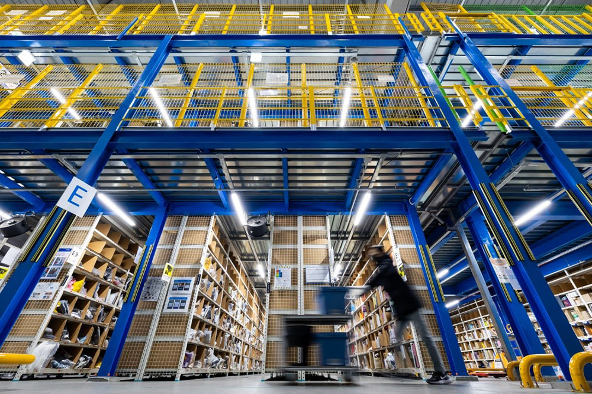
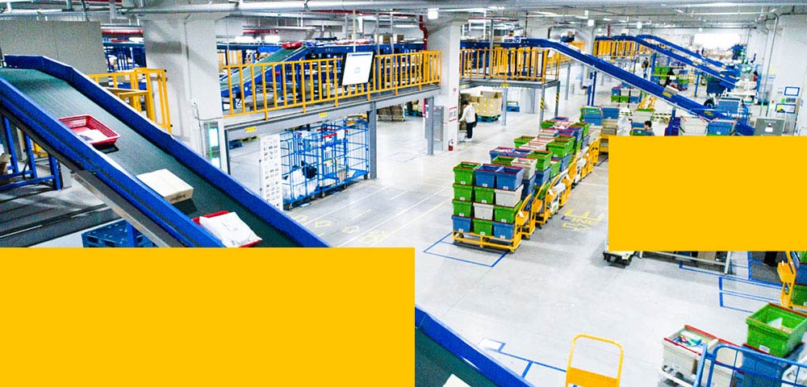
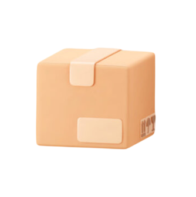
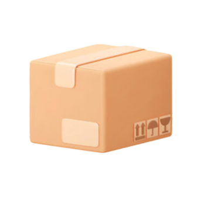
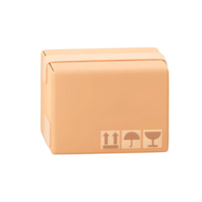
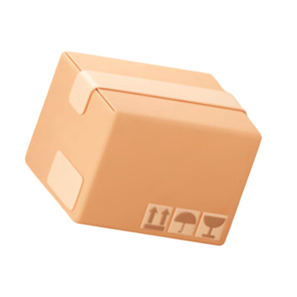
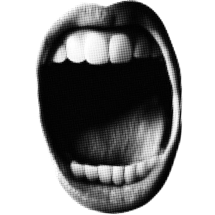

비내리는 여름날. 퇴근 시간, 난 어떤 버스를 기다린다. 시내버스는 아니다.
추적추적 내리는 빗줄기가 아스팔트를 때리고, 습한 공기는 피부에 착 달라붙는다.
정류장엔 남녀노소 가리지 않고 다양한 사람들이 나와 같은 버스를 기다리고 있다.
분위기는 시내버스 고객들과는 사뭇 다르다.
저녁 6시, 치열한 하루를 끝마치고 집으로 돌아가라 시간.
여기 서 있는 우리는 이제 막 하루를 보낼 사람들이다.
물류센터로 향하는 야간일용직들이다. 아직 시작도 안 했는데, 벌써 어깨가 무겁다.
곧이어 커다란 관광버스가 천천히 다가온다. 쿠팡 로고가 새겨진, 평소엔 여행이나 관광용으로 쓰일 법한 그 큰 버스. 하지만 오늘은 야간 노동자들을 실어 나르는 통근 셔틀이다. 기사님께 티켓을 보여주고, 각자 적당한 자리에 앉는다. 버스 안은 빛 한 점 없이 어둡다. 모든 불은 꺼져있다. 다른 시간대를 보내는 승객을 위한 기사님의 배려다. 다들 눈을 감고 잠을 청한다. 난 창문에 맺힌 물방울 사이로, 하루를 마치고 돌아가는 사람들의 행렬을 보며 잠에 들었다. 고속도로를 지나 한참을 달리다 보면, 창에 맺힌 물방울을 뚫고 센터의 거대한 불빛이 서서히 다가온다.





어떤 잘못에 대해 사람을 엄하게 다루어 단속하는 것.
물류센터는 속도로 평가되는 곳이다.
사람 보단 레일이 먼저다.
난 처음은 아니였지만, 센터마다 방식이 조금씩 다르기에 교육을 들어야 했다.
지루한 영상교육이 끝나고, 현장으로 향했다.
난 중년 남성 2명과 내 또래 대학생 1명이 있는 조에 배정됐다.
보통 계약직 사수들은 30,40대 남성들이다.
담당사수들이 직접 실무교육을 해준다.
“바빠서 못 해요, 알아서 따라 오셔야해요”
교육이라 부르기엔 너무 짧았다.
괜찮다. 결국 하는 일은 똑같다. 레일로 쏟아져 오는 상자를 분류해서 파레트 위에 옮기고, 파레트가 키를 넘어가면 랩으로 감싸는 게 끝이다. 흔히 말하는 '상하차 업무'와 같다. 여기선 '허브'라 부른다. 난 당당하게 레일로 오는 상자를 하나 들어올려 파레트로 옮겼다.
사수가 소리쳤다. "하나씩 하지말고 2개 3개 모아서 가셔야죠. 그리고 상자는 크기별로.."
그분껜 미안하지만 내겐 그저 잡도리처럼 들렸다. 1개면 어떻고 2개면 어떻단 말인가.
작든 크든 파레트에 적당히 맞춰서 넣으면 되는 거 아닌가.
다른 곳과 달리 엄한 분위기, 몸에 힘이 들어갔다.
보통 허브업무의 가장 힘든 점은 8시간 동안 미친듯이 몸을 움직여야 한다는 것이다.
하지만 오늘 날 힘들게 하는 건 사수의 잡도리였다.
그는 상자를 들고 내리는 자세부터
랩을 감싸는 자세까지 모든 걸 본인이 해오던 방식대로 하길 원했다.
상자를 나르는 시간보다 잔소리 듣는 시간이 더 많은 거 같았다.
"군대도 이정돈 아니였던 거 같은데.."
1시간쯤 지났을까..
다른 라인의 사수가 지원이 필요하다며 우리 라인에 왔고, 내가 가게 됐다.
짧게 밀어 올린 머리, 주걱 턱, 사람을 평가하듯 훑는 눈, 안 좋은 예감이 들었다.
그는 업무를 알려주겠다 했다.
하지만 설명 대신 다른 이야기가 시작됐다.
“ 저 사람 보이지? 정신병자야.”
그는 일용직으로 온 부사수 험담을 늘어놓았다.
난 그의 얘기만 듣고 정말로 정신적으로 아픈 분인줄 알았다.
"잘 챙겨드려야지"
하지만 그 사람과 같이 일하면서 느낀건, 절대 아픈 사람은 아니라는 거다.
단지 처음이라 느릴 뿐이었다.
일을 처음하는 사람이라면 당연한거다.
아니나다를까 주걱턱 사수의 잡도리는 쉬는시간이 오기까지 끝나지 않았다.
그는 아무 말 없이, 계속 따라오려고 애썼다.
늑대와 양을 보는 거 같았다.
쉬는 시간, 직원들 사이에서 일용직 사원에 대한 험담이 오갔다.
"오늘 일용직 사원님들 물 안좋다고 난리에요"
내 사수가 말했다.
이상하다. 당연한거 아닌가?
면접을 보는 곳도 아니고, 이력서를 내는 곳도 아니다.
교육은 거의 없었고, 기준은 이미 익숙한 사람의 속도에 맞춰져 있었다.
난 그냥 박스만 조용히 나르다 집에 가고 싶은데..
직원들은 마치 인턴 대해듯이 했다.
"어차피 다음에 또 오실거 아니에요? 이번에 제대로 배우셔야죠"
'싫어요.
다시는 여기 안올래요.'
업무가 다시 시작되고, 정신없이 일하던 순간. 날카로운 말이 귀에 박혔다.

주변이 잠시 조용해졌다. 모든 라인 사람들이 우리쪽을 쳐다봤다.
주걱턱 사수가 그 사람 면전까지 와서는 마구 소리쳤다.
이유는 그냥 '느려서'였다.
남 일 같지 않아서일까, 아무 말 없이 듣고만 있는 그 사람이 답답해서일까,
아니면 그냥 그 목소리가 듣기 싫어서일까. 나도 모르게 끼어들고 말았다.
"아저씨! 말을 그래 하면 안되죠!
내가 따지듯이 말했다.
순간, 짧은 말이 오갔다.
더이상 무를 수 없다고 생각했고, 서로 강하게 쏘아붙였다.
" 그래 답답하면 잘하는 사람을 뽑으세요! 일용직 쓰지마시고"
목소리가 조금 점점 높아졌고, 사람들이 모여들었다.
결론은 나지 않았다.
내 기존 사수가 와서 말린 덕분에, 나는 원래 자리로 돌아갔다.
그 뒤로는 말이 거의 없었다.
퇴근 버스 창밖으로 불빛이 지나간다.
센터는 속도를 유지해야 하루가 끝난다. 일용직들은 아무것도 모른 채 그 속도 안으로 들어온다.
하루 종일 상자를 옮겼는데 기억에 남는 건 무게가 아니라 분위기였다.
물류센터에는 매일 새로운 사람들이 온다.
그리고 대부분 첫날에는 느리다.
조금만 지나면 괜찮아지지만, 그때까지 기다려주는 사람은 많지 않다.
그곳에서 가장 빠르게 움직이는 건 컨베이어 벨트였고,
가장 천천히 적응하는 건 사람이다.